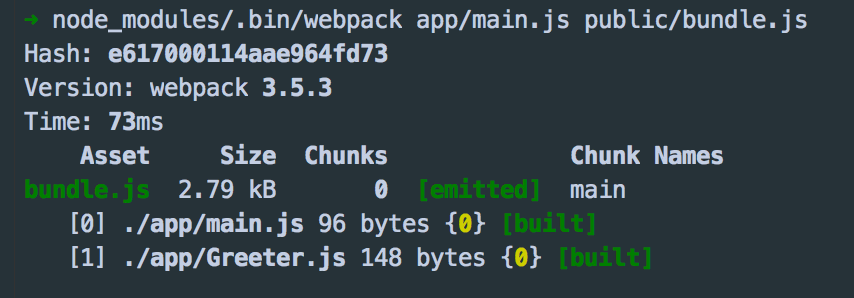

2018年8月25日更新，目前 webpack 已经更新值 4.17.1 写了一个简单的demo，如果遇到啥问题，可以参考写在前面的话
阅读本文之前，先看下面这个webpack的配置文件，如果每一项你都懂，那本文能带给你的收获也许就比较有限，你可以快速浏览或直接跳过；如果你和十天前的我一样，对很多选项存在着疑惑，那花一段时间慢慢阅读本文，你的疑惑一定一个一个都会消失；如果你以前没怎么接触过Webpack，而你又你对webpack感兴趣，那么动手跟着本文中那个贯穿始终的例子写一次，写完以后你会发现你已明明白白的走进了Webpack的大门。// 一个常见的`webpack`配置文件 const webpack = require('webpack'); const HtmlWebpackPlugin = require('html-webpack-plugin'); const ExtractTextPlugin = require('extract-text-webpack-plugin'); module.exports = { entry: __dirname + "/app/main.js", //已多次提及的唯一入口文件 output: { path: __dirname + "/build", filename: "bundle-[hash].js" }, devtool: 'none', devServer: { contentBase: "./public", //本地服务器所加载的页面所在的目录 historyApiFallback: true, //不跳转 inline: true, hot: true }, module: { rules: [{ test: /(\.jsx|\.js)$/, use: { loader: "babel-loader" }, exclude: /node_modules/ }, { test: /\.css$/, use: ExtractTextPlugin.extract({ fallback: "style-loader", use: [{ loader: "css-loader", options: { modules: true, localIdentName: '[name]__[local]--[hash:base64:5]' } }, { loader: "postcss-loader" }], }) } } ] }, plugins: [ new webpack.BannerPlugin('版权所有，翻版必究'), new HtmlWebpackPlugin({ template: __dirname + "/app/index.tmpl.html" //new 一个这个插件的实例，并传入相关的参数 }), new webpack.optimize.OccurrenceOrderPlugin(), new webpack.optimize.UglifyJsPlugin(), new ExtractTextPlugin("style.css") ] };什么是WebPack，为什么要使用它？
为什要使用WebPack
现今的很多网页其实可以看做是功能丰富的应用，它们拥有着复杂的JavaScript代码和一大堆依赖包。为了简化开发的复杂度，前端社区涌现出了很多好的实践方法
- 模块化，让我们可以把复杂的程序细化为小的文件;
- 类似于TypeScript这种在JavaScript基础上拓展的开发语言：使我们能够实现目前版本的JavaScript不能直接使用的特性，并且之后还能转换为JavaScript文件使浏览器可以识别；
- Scss，less等CSS预处理器
- ...
这些改进确实大大的提高了我们的开发效率，但是利用它们开发的文件往往需要进行额外的处理才能让浏览器识别,而手动处理又是非常繁琐的，这就为WebPack类的工具的出现提供了需求。
什么是Webpack
WebPack可以看做是模块打包机：它做的事情是，分析你的项目结构，找到JavaScript模块以及其它的一些浏览器不能直接运行的拓展语言（Scss，TypeScript等），并将其转换和打包为合适的格式供浏览器使用。
WebPack和Grunt以及Gulp相比有什么特性
其实Webpack和另外两个并没有太多的可比性，Gulp/Grunt是一种能够优化前端的开发流程的工具，而WebPack是一种模块化的解决方案，不过Webpack的优点使得Webpack在很多场景下可以替代Gulp/Grunt类的工具。
Grunt和Gulp的工作方式是：在一个配置文件中，指明对某些文件进行类似编译，组合，压缩等任务的具体步骤，工具之后可以自动替你完成这些任务。
Webpack的工作方式是：把你的项目当做一个整体，通过一个给定的主文件（如：index.js），Webpack将从这个文件开始找到你的项目的所有依赖文件，使用loaders处理它们，最后打包为一个（或多个）浏览器可识别的JavaScript文件。
如果实在要把二者进行比较，Webpack的处理速度更快更直接，能打包更多不同类型的文件。
开始使用Webpack
初步了解了Webpack工作方式后，我们一步步的开始学习使用Webpack。
安装
Webpack可以使用npm安装，新建一个空的练习文件夹（此处命名为webpack sample project），在终端中转到该文件夹后执行下述指令就可以完成安装。
//全局安装 npm install -g webpack //安装到你的项目目录 npm install --save-dev webpack正式使用Webpack前的准备
- 在上述练习文件夹中创建一个package.json文件，这是一个标准的npm说明文件，里面蕴含了丰富的信息，包括当前项目的依赖模块，自定义的脚本任务等等。在终端中使用
npm init命令可以自动创建这个package.json文件npm init输入这个命令后，终端会问你一系列诸如项目名称，项目描述，作者等信息，不过不用担心，如果你不准备在npm中发布你的模块，这些问题的答案都不重要，回车默认即可。
- package.json文件已经就绪，我们在本项目中安装Webpack作为依赖包
// 安装Webpack npm install --save-dev webpack
- 回到之前的空文件夹，并在里面创建两个文件夹,app文件夹和public文件夹，app文件夹用来存放原始数据和我们将写的JavaScript模块，public文件夹用来存放之后供浏览器读取的文件（包括使用webpack打包生成的js文件以及一个
index.html文件）。接下来我们再创建三个文件:
index.html--放在public文件夹中;Greeter.js-- 放在app文件夹中;main.js-- 放在app文件夹中;此时项目结构如下图所示
我们在index.html文件中写入最基础的html代码，它在这里目的在于引入打包后的js文件（这里我们先把之后打包后的js文件命名为
bundle.js，之后我们还会详细讲述）。<!-- index.html --> <!DOCTYPE html> <html lang="en"> <head> <meta charset="utf-8"> <title>Webpack Sample Project</title> </head> <body> <div id='root'> </div> <script src="bundle.js"></script> </body> </html>我们在
Greeter.js中定义一个返回包含问候信息的html元素的函数,并依据CommonJS规范导出这个函数为一个模块：// Greeter.js module.exports = function() { var greet = document.createElement('div'); greet.textContent = "Hi there and greetings!"; return greet; };
main.js文件中我们写入下述代码，用以把Greeter模块返回的节点插入页面。//main.js const greeter = require('./Greeter.js'); document.querySelector("#root").appendChild(greeter());正式使用Webpack
webpack可以在终端中使用，在基本的使用方法如下：
# {extry file}出填写入口文件的路径，本文中就是上述main.js的路径， # {destination for bundled file}处填写打包文件的存放路径 # 填写路径的时候不用添加{} webpack {entry file} {destination for bundled file}指定入口文件后，webpack将自动识别项目所依赖的其它文件，不过需要注意的是如果你的webpack不是全局安装的，那么当你在终端中使用此命令时，需要额外指定其在node_modules中的地址，继续上面的例子，在终端中输入如下命令
# webpack非全局安装的情况 node_modules/.bin/webpack app/main.js public/bundle.js结果如下

可以看出
webpack同时编译了main.js和Greeter,js,现在打开index.html,可以看到如下结果有没有很激动，已经成功的使用
Webpack打包了一个文件了。不过在终端中进行复杂的操作，其实是不太方便且容易出错的，接下来看看Webpack的另一种更常见的使用方法。通过配置文件来使用
WebpackWebpack拥有很多其它的比较高级的功能（比如说本文后面会介绍的
loaders和plugins），这些功能其实都可以通过命令行模式实现，但是正如前面提到的，这样不太方便且容易出错的，更好的办法是定义一个配置文件，这个配置文件其实也是一个简单的JavaScript模块，我们可以把所有的与打包相关的信息放在里面。继续上面的例子来说明如何写这个配置文件，在当前练习文件夹的根目录下新建一个名为
webpack.config.js的文件，我们在其中写入如下所示的简单配置代码，目前的配置主要涉及到的内容是入口文件路径和打包后文件的存放路径。module.exports = { entry: __dirname + "/app/main.js",//已多次提及的唯一入口文件 output: { path: __dirname + "/public",//打包后的文件存放的地方 filename: "bundle.js"//打包后输出文件的文件名 } }注：“__dirname”是node.js中的一个全局变量，它指向当前执行脚本所在的目录。有了这个配置之后，再打包文件，只需在终端里运行
webpack(非全局安装需使用node_modules/.bin/webpack)命令就可以了，这条命令会自动引用webpack.config.js文件中的配置选项，示例如下：
又学会了一种使用
Webpack的方法，这种方法不用管那烦人的命令行参数，有没有感觉很爽。如果我们可以连webpack(非全局安装需使用node_modules/.bin/webpack)这条命令都可以不用，那种感觉会不会更爽~，继续看下文。更快捷的执行打包任务
在命令行中输入命令需要代码类似于
node_modules/.bin/webpack这样的路径其实是比较烦人的，不过值得庆幸的是npm可以引导任务执行，对npm进行配置后可以在命令行中使用简单的npm start命令来替代上面略微繁琐的命令。在package.json中对scripts对象进行相关设置即可，设置方法如下。{ "name": "webpack-sample-project", "version": "1.0.0", "description": "Sample webpack project", "scripts": { "start": "webpack" // 修改的是这里，JSON文件不支持注释，引用时请清除 }, "author": "zhang", "license": "ISC", "devDependencies": { "webpack": "3.10.0" } }注：package.json中的script会安装一定顺序寻找命令对应位置，本地的node_modules/.bin路径就在这个寻找清单中，所以无论是全局还是局部安装的Webpack，你都不需要写前面那指明详细的路径了。npm的
start命令是一个特殊的脚本名称，其特殊性表现在，在命令行中使用npm start就可以执行其对于的命令，如果对应的此脚本名称不是start，想要在命令行中运行时，需要这样用npm run {script name}如npm run build，我们在命令行中输入npm start现在只需要使用
npm start就可以打包文件了，有没有觉得webpack也不过如此嘛，不过不要太小瞧webpack，要充分发挥其强大的功能我们需要修改配置文件的其它选项，一项项来看。Webpack的强大功能
生成Source Maps（使调试更容易）
开发总是离不开调试，方便的调试能极大的提高开发效率，不过有时候通过打包后的文件，你是不容易找到出错了的地方，对应的你写的代码的位置的，
Source Maps就是来帮我们解决这个问题的。通过简单的配置，
webpack就可以在打包时为我们生成的source maps，这为我们提供了一种对应编译文件和源文件的方法，使得编译后的代码可读性更高，也更容易调试。在
webpack的配置文件中配置source maps，需要配置devtool，它有以下四种不同的配置选项，各具优缺点，描述如下：
devtool选项 配置结果 source-map在一个单独的文件中产生一个完整且功能完全的文件。这个文件具有最好的 source map，但是它会减慢打包速度；cheap-module-source-map在一个单独的文件中生成一个不带列映射的 map，不带列映射提高了打包速度，但是也使得浏览器开发者工具只能对应到具体的行，不能对应到具体的列（符号），会对调试造成不便；eval-source-map使用 eval打包源文件模块，在同一个文件中生成干净的完整的source map。这个选项可以在不影响构建速度的前提下生成完整的sourcemap，但是对打包后输出的JS文件的执行具有性能和安全的隐患。在开发阶段这是一个非常好的选项，在生产阶段则一定不要启用这个选项；cheap-module-eval-source-map这是在打包文件时最快的生成 source map的方法，生成的Source Map会和打包后的JavaScript文件同行显示，没有列映射，和eval-source-map选项具有相似的缺点；正如上表所述，上述选项由上到下打包速度越来越快，不过同时也具有越来越多的负面作用，较快的打包速度的后果就是对打包后的文件的的执行有一定影响。
对小到中型的项目中，
eval-source-map是一个很好的选项，再次强调你只应该开发阶段使用它，我们继续对上文新建的webpack.config.js，进行如下配置:module.exports = { devtool: 'eval-source-map', entry: __dirname + "/app/main.js", output: { path: __dirname + "/public", filename: "bundle.js" } }cheap-module-eval-source-map方法构建速度更快，但是不利于调试，推荐在大型项目考虑时间成本时使用。使用webpack构建本地服务器
想不想让你的浏览器监听你的代码的修改，并自动刷新显示修改后的结果，其实
Webpack提供一个可选的本地开发服务器，这个本地服务器基于node.js构建，可以实现你想要的这些功能，不过它是一个单独的组件，在webpack中进行配置之前需要单独安装它作为项目依赖npm install --save-dev webpack-dev-serverdevserver作为webpack配置选项中的一项，以下是它的一些配置选项，更多配置可参考这里
devserver的配置选项 功能描述 contentBase 默认webpack-dev-server会为根文件夹提供本地服务器，如果想为另外一个目录下的文件提供本地服务器，应该在这里设置其所在目录（本例设置到“public"目录） port 设置默认监听端口，如果省略，默认为”8080“ inline 设置为 true，当源文件改变时会自动刷新页面historyApiFallback 在开发单页应用时非常有用，它依赖于HTML5 history API，如果设置为 true，所有的跳转将指向index.html把这些命令加到webpack的配置文件中，现在的配置文件
webpack.config.js如下所示module.exports = { devtool: 'eval-source-map', entry: __dirname + "/app/main.js", output: { path: __dirname + "/public", filename: "bundle.js" }, devServer: { contentBase: "./public",//本地服务器所加载的页面所在的目录 historyApiFallback: true,//不跳转 inline: true//实时刷新 } }在
package.json中的scripts对象中添加如下命令，用以开启本地服务器："scripts": { "test": "echo \"Error: no test specified\" && exit 1", "start": "webpack", "server": "webpack-dev-server --open" },在终端中输入
npm run server即可在本地的8080端口查看结果Loaders
鼎鼎大名的Loaders登场了！
Loaders是webpack提供的最激动人心的功能之一了。通过使用不同的loader，webpack有能力调用外部的脚本或工具，实现对不同格式的文件的处理，比如说分析转换scss为css，或者把下一代的JS文件（ES6，ES7)转换为现代浏览器兼容的JS文件，对React的开发而言，合适的Loaders可以把React的中用到的JSX文件转换为JS文件。Loaders需要单独安装并且需要在
webpack.config.js中的modules关键字下进行配置，Loaders的配置包括以下几方面：
test：一个用以匹配loaders所处理文件的拓展名的正则表达式（必须）loader：loader的名称（必须）include/exclude:手动添加必须处理的文件（文件夹）或屏蔽不需要处理的文件（文件夹）（可选）；query：为loaders提供额外的设置选项（可选）不过在配置loader之前，我们把
Greeter.js里的问候消息放在一个单独的JSON文件里,并通过合适的配置使Greeter.js可以读取该JSON文件的值，各文件修改后的代码如下：在app文件夹中创建带有问候信息的JSON文件(命名为
config.json){ "greetText": "Hi there and greetings from JSON!" }更新后的Greeter.js
var config = require('./config.json'); module.exports = function() { var greet = document.createElement('div'); greet.textContent = config.greetText; return greet; };注 由于webpack3.*/webpack2.*已经内置可处理JSON文件，这里我们无需再添加webpack1.*需要的json-loader。在看如何具体使用loader之前我们先看看Babel是什么？Babel
Babel其实是一个编译JavaScript的平台，它可以编译代码帮你达到以下目的：
- 让你能使用最新的JavaScript代码（ES6，ES7...），而不用管新标准是否被当前使用的浏览器完全支持；
- 让你能使用基于JavaScript进行了拓展的语言，比如React的JSX；
Babel的安装与配置
Babel其实是几个模块化的包，其核心功能位于称为
babel-core的npm包中，webpack可以把其不同的包整合在一起使用，对于每一个你需要的功能或拓展，你都需要安装单独的包（用得最多的是解析Es6的babel-env-preset包和解析JSX的babel-preset-react包）。我们先来一次性安装这些依赖包
// npm一次性安装多个依赖模块，模块之间用空格隔开 npm install --save-dev babel-core babel-loader babel-preset-env babel-preset-react在
webpack中配置Babel的方法如下:module.exports = { entry: __dirname + "/app/main.js",//已多次提及的唯一入口文件 output: { path: __dirname + "/public",//打包后的文件存放的地方 filename: "bundle.js"//打包后输出文件的文件名 }, devtool: 'eval-source-map', devServer: { contentBase: "./public",//本地服务器所加载的页面所在的目录 historyApiFallback: true,//不跳转 inline: true//实时刷新 }, module: { rules: [ { test: /(\.jsx|\.js)$/, use: { loader: "babel-loader", options: { presets: [ "env", "react" ] } }, exclude: /node_modules/ } ] } };现在你的webpack的配置已经允许你使用ES6以及JSX的语法了。继续用上面的例子进行测试，不过这次我们会使用React，记得先安装 React 和 React-DOM
npm install --save react react-dom接下来我们使用ES6的语法，更新
Greeter.js并返回一个React组件//Greeter,js import React, {Component} from 'react' import config from './config.json'; class Greeter extends Component{ render() { return ( <div> {config.greetText} </div> ); } } export default Greeter修改
main.js如下，使用ES6的模块定义和渲染Greeter模块// main.js import React from 'react'; import {render} from 'react-dom'; import Greeter from './Greeter'; render(<Greeter />, document.getElementById('root'));重新使用
npm start打包，如果之前打开的本地服务器没有关闭，你应该可以在localhost:8080下看到与之前一样的内容，这说明react和es6被正常打包了。Babel的配置
Babel其实可以完全在
webpack.config.js中进行配置，但是考虑到babel具有非常多的配置选项，在单一的webpack.config.js文件中进行配置往往使得这个文件显得太复杂，因此一些开发者支持把babel的配置选项放在一个单独的名为 ".babelrc" 的配置文件中。我们现在的babel的配置并不算复杂，不过之后我们会再加一些东西，因此现在我们就提取出相关部分，分两个配置文件进行配置（webpack会自动调用.babelrc里的babel配置选项），如下：module.exports = { entry: __dirname + "/app/main.js",//已多次提及的唯一入口文件 output: { path: __dirname + "/public",//打包后的文件存放的地方 filename: "bundle.js"//打包后输出文件的文件名 }, devtool: 'eval-source-map', devServer: { contentBase: "./public",//本地服务器所加载的页面所在的目录 historyApiFallback: true,//不跳转 inline: true//实时刷新 }, module: { rules: [ { test: /(\.jsx|\.js)$/, use: { loader: "babel-loader" }, exclude: /node_modules/ } ] } };//.babelrc { "presets": ["react", "env"] }到目前为止，我们已经知道了，对于模块，Webpack能提供非常强大的处理功能，那那些是模块呢。
一切皆模块
Webpack有一个不可不说的优点，它把所有的文件都都当做模块处理，JavaScript代码，CSS和fonts以及图片等等通过合适的loader都可以被处理。
CSS
webpack提供两个工具处理样式表，
css-loader和style-loader，二者处理的任务不同，css-loader使你能够使用类似@import和url(...)的方法实现require()的功能,style-loader将所有的计算后的样式加入页面中，二者组合在一起使你能够把样式表嵌入webpack打包后的JS文件中。继续上面的例子
//安装 npm install --save-dev style-loader css-loader//使用 module.exports = { ... module: { rules: [ { test: /(\.jsx|\.js)$/, use: { loader: "babel-loader" }, exclude: /node_modules/ }, { test: /\.css$/, use: [ { loader: "style-loader" }, { loader: "css-loader" } ] } ] } };请注意这里对同一个文件引入多个loader的方法。接下来，在app文件夹里创建一个名字为"main.css"的文件，对一些元素设置样式
/* main.css */ html { box-sizing: border-box; -ms-text-size-adjust: 100%; -webkit-text-size-adjust: 100%; } *, *:before, *:after { box-sizing: inherit; } body { margin: 0; font-family: 'Helvetica Neue', Helvetica, Arial, sans-serif; } h1, h2, h3, h4, h5, h6, p, ul { margin: 0; padding: 0; }我们这里例子中用到的
webpack只有单一的入口，其它的模块需要通过import,require,url等与入口文件建立其关联，为了让webpack能找到”main.css“文件，我们把它导入”main.js “中，如下//main.js import React from 'react'; import {render} from 'react-dom'; import Greeter from './Greeter'; import './main.css';//使用require导入css文件 render(<Greeter />, document.getElementById('root'));通常情况下，css会和js打包到同一个文件中，并不会打包为一个单独的css文件，不过通过合适的配置webpack也可以把css打包为单独的文件的。上面的代码说明webpack是怎么把css当做模块看待的，咱们继续看一个更加真实的css模块实践。
CSS module
在过去的一些年里，JavaScript通过一些新的语言特性，更好的工具以及更好的实践方法（比如说模块化）发展得非常迅速。模块使得开发者把复杂的代码转化为小的，干净的，依赖声明明确的单元，配合优化工具，依赖管理和加载管理可以自动完成。
不过前端的另外一部分，CSS发展就相对慢一些，大多的样式表却依旧巨大且充满了全局类名，维护和修改都非常困难。
被称为
CSS modules的技术意在把JS的模块化思想带入CSS中来，通过CSS模块，所有的类名，动画名默认都只作用于当前模块。Webpack对CSS模块化提供了非常好的支持，只需要在CSS loader中进行简单配置即可，然后就可以直接把CSS的类名传递到组件的代码中，这样做有效避免了全局污染。具体的代码如下module.exports = { ... module: { rules: [ { test: /(\.jsx|\.js)$/, use: { loader: "babel-loader" }, exclude: /node_modules/ }, { test: /\.css$/, use: [ { loader: "style-loader" }, { loader: "css-loader", options: { modules: true, // 指定启用css modules localIdentName: '[name]__[local]--[hash:base64:5]' // 指定css的类名格式 } } ] } ] } };我们在app文件夹下创建一个
Greeter.css文件来进行一下测试/* Greeter.css */ .root { background-color: #eee; padding: 10px; border: 3px solid #ccc; }导入
.root到Greeter.js中import React, {Component} from 'react'; import config from './config.json'; import styles from './Greeter.css';//导入 class Greeter extends Component{ render() { return ( <div className={styles.root}> //使用cssModule添加类名的方法 {config.greetText} </div> ); } } export default Greeter放心使用把，相同的类名也不会造成不同组件之间的污染。
CSS modules 也是一个很大的主题，有兴趣的话可以去其官方文档了解更多。
CSS预处理器
Sass和Less之类的预处理器是对原生CSS的拓展，它们允许你使用类似于variables,nesting,mixins,inheritance等不存在于CSS中的特性来写CSS，CSS预处理器可以这些特殊类型的语句转化为浏览器可识别的CSS语句，你现在可能都已经熟悉了，在webpack里使用相关loaders进行配置就可以使用了，以下是常用的CSS 处理
loaders:
Less LoaderSass LoaderStylus Loader不过其实也存在一个CSS的处理平台
-PostCSS，它可以帮助你的CSS实现更多的功能，在其官方文档可了解更多相关知识。举例来说如何使用PostCSS，我们使用PostCSS来为CSS代码自动添加适应不同浏览器的CSS前缀。
首先安装
postcss-loader和autoprefixer（自动添加前缀的插件）npm install --save-dev postcss-loader autoprefixer接下来，在webpack配置文件中添加
postcss-loader，在根目录新建postcss.config.js,并添加如下代码之后，重新使用npm start打包时，你写的css会自动根据Can i use里的数据添加不同前缀了。//webpack.config.js module.exports = { ... module: { rules: [ { test: /(\.jsx|\.js)$/, use: { loader: "babel-loader" }, exclude: /node_modules/ }, { test: /\.css$/, use: [ { loader: "style-loader" }, { loader: "css-loader", options: { modules: true } }, { loader: "postcss-loader" } ] } ] } }// postcss.config.js module.exports = { plugins: [ require('autoprefixer') ] }至此，本文已经谈论了处理JS的Babel和处理CSS的PostCSS的基本用法，它们其实也是两个单独的平台，配合
webpack可以很好的发挥它们的作用。接下来介绍Webpack中另一个非常重要的功能-Plugins插件（Plugins）
插件（Plugins）是用来拓展Webpack功能的，它们会在整个构建过程中生效，执行相关的任务。
Loaders和Plugins常常被弄混，但是他们其实是完全不同的东西，可以这么来说，loaders是在打包构建过程中用来处理源文件的（JSX，Scss，Less..），一次处理一个，插件并不直接操作单个文件，它直接对整个构建过程其作用。Webpack有很多内置插件，同时也有很多第三方插件，可以让我们完成更加丰富的功能。
使用插件的方法
要使用某个插件，我们需要通过
npm安装它，然后要做的就是在webpack配置中的plugins关键字部分添加该插件的一个实例（plugins是一个数组）继续上面的例子，我们添加了一个给打包后代码添加版权声明的插件。const webpack = require('webpack'); module.exports = { ... module: { rules: [ { test: /(\.jsx|\.js)$/, use: { loader: "babel-loader" }, exclude: /node_modules/ }, { test: /\.css$/, use: [ { loader: "style-loader" }, { loader: "css-loader", options: { modules: true } }, { loader: "postcss-loader" } ] } ] }, plugins: [ new webpack.BannerPlugin('版权所有，翻版必究') ], };通过这个插件，打包后的JS文件显示如下
这就是webpack插件的基础用法了，下面给大家推荐几个常用的插件
HtmlWebpackPlugin
这个插件的作用是依据一个简单的
index.html模板，生成一个自动引用你打包后的JS文件的新index.html。这在每次生成的js文件名称不同时非常有用（比如添加了hash值）。安装
npm install --save-dev html-webpack-plugin这个插件自动完成了我们之前手动做的一些事情，在正式使用之前需要对一直以来的项目结构做一些更改：
- 移除public文件夹，利用此插件，
index.html文件会自动生成，此外CSS已经通过前面的操作打包到JS中了。- 在app目录下，创建一个
index.tmpl.html文件模板，这个模板包含title等必须元素，在编译过程中，插件会依据此模板生成最终的html页面，会自动添加所依赖的 css, js，favicon等文件，index.tmpl.html中的模板源代码如下：<!DOCTYPE html> <html lang="en"> <head> <meta charset="utf-8"> <title>Webpack Sample Project</title> </head> <body> <div id='root'> </div> </body> </html>3.更新
webpack的配置文件，方法同上,新建一个build文件夹用来存放最终的输出文件const webpack = require('webpack'); const HtmlWebpackPlugin = require('html-webpack-plugin'); module.exports = { entry: __dirname + "/app/main.js",//已多次提及的唯一入口文件 output: { path: __dirname + "/build", filename: "bundle.js" }, devtool: 'eval-source-map', devServer: { contentBase: "./public",//本地服务器所加载的页面所在的目录 historyApiFallback: true,//不跳转 inline: true//实时刷新 }, module: { rules: [ { test: /(\.jsx|\.js)$/, use: { loader: "babel-loader" }, exclude: /node_modules/ }, { test: /\.css$/, use: [ { loader: "style-loader" }, { loader: "css-loader", options: { modules: true } }, { loader: "postcss-loader" } ] } ] }, plugins: [ new webpack.BannerPlugin('版权所有，翻版必究'), new HtmlWebpackPlugin({ template: __dirname + "/app/index.tmpl.html"//new 一个这个插件的实例，并传入相关的参数 }) ], };再次执行
npm start你会发现，build文件夹下面生成了bundle.js和index.html。Hot Module Replacement
Hot Module Replacement（HMR）也是webpack里很有用的一个插件，它允许你在修改组件代码后，自动刷新实时预览修改后的效果。在webpack中实现HMR也很简单，只需要做两项配置
- 在webpack配置文件中添加HMR插件；
- 在Webpack Dev Server中添加“hot”参数；
不过配置完这些后，JS模块其实还是不能自动热加载的，还需要在你的JS模块中执行一个Webpack提供的API才能实现热加载，虽然这个API不难使用，但是如果是React模块，使用我们已经熟悉的Babel可以更方便的实现功能热加载。
整理下我们的思路，具体实现方法如下
Babel和webpack是独立的工具- 二者可以一起工作
- 二者都可以通过插件拓展功能
- HMR是一个webpack插件，它让你能浏览器中实时观察模块修改后的效果，但是如果你想让它工作，需要对模块进行额外的配额；
- Babel有一个叫做
react-transform-hrm的插件，可以在不对React模块进行额外的配置的前提下让HMR正常工作；还是继续上例来实际看看如何配置
const webpack = require('webpack'); const HtmlWebpackPlugin = require('html-webpack-plugin'); module.exports = { entry: __dirname + "/app/main.js",//已多次提及的唯一入口文件 output: { path: __dirname + "/build", filename: "bundle.js" }, devtool: 'eval-source-map', devServer: { contentBase: "./public",//本地服务器所加载的页面所在的目录 historyApiFallback: true,//不跳转 inline: true, hot: true }, module: { rules: [ { test: /(\.jsx|\.js)$/, use: { loader: "babel-loader" }, exclude: /node_modules/ }, { test: /\.css$/, use: [ { loader: "style-loader" }, { loader: "css-loader", options: { modules: true } }, { loader: "postcss-loader" } ] } ] }, plugins: [ new webpack.BannerPlugin('版权所有，翻版必究'), new HtmlWebpackPlugin({ template: __dirname + "/app/index.tmpl.html"//new 一个这个插件的实例，并传入相关的参数 }), new webpack.HotModuleReplacementPlugin()//热加载插件 ], };安装
react-transform-hmrnpm install --save-dev babel-plugin-react-transform react-transform-hmr配置Babel
// .babelrc { "presets": ["react", "env"], "env": { "development": { "plugins": [["react-transform", { "transforms": [{ "transform": "react-transform-hmr", "imports": ["react"], "locals": ["module"] }] }]] } } }现在当你使用React时，可以热加载模块了,每次保存就能在浏览器上看到更新内容。
产品阶段的构建
目前为止，我们已经使用webpack构建了一个完整的开发环境。但是在产品阶段，可能还需要对打包的文件进行额外的处理，比如说优化，压缩，缓存以及分离CSS和JS。
对于复杂的项目来说，需要复杂的配置，这时候分解配置文件为多个小的文件可以使得事情井井有条，以上面的例子来说，我们创建一个
webpack.production.config.js的文件，在里面加上基本的配置,它和原始的webpack.config.js很像，如下// webpack.production.config.js const webpack = require('webpack'); const HtmlWebpackPlugin = require('html-webpack-plugin'); module.exports = { entry: __dirname + "/app/main.js", //已多次提及的唯一入口文件 output: { path: __dirname + "/build", filename: "bundle.js" }, devtool: 'null', //注意修改了这里，这能大大压缩我们的打包代码 devServer: { contentBase: "./public", //本地服务器所加载的页面所在的目录 historyApiFallback: true, //不跳转 inline: true, hot: true }, module: { rules: [{ test: /(\.jsx|\.js)$/, use: { loader: "babel-loader" }, exclude: /node_modules/ }, { test: /\.css$/, use: ExtractTextPlugin.extract({ fallback: "style-loader", use: [{ loader: "css-loader", options: { modules: true } }, { loader: "postcss-loader" }], }) }] }, plugins: [ new webpack.BannerPlugin('版权所有，翻版必究'), new HtmlWebpackPlugin({ template: __dirname + "/app/index.tmpl.html" //new 一个这个插件的实例，并传入相关的参数 }), new webpack.HotModuleReplacementPlugin() //热加载插件 ], };//package.json { "name": "test", "version": "1.0.0", "description": "", "main": "index.js", "scripts": { "test": "echo \"Error: no test specified\" && exit 1", "start": "webpack", "server": "webpack-dev-server --open", "build": "NODE_ENV=production webpack --config ./webpack.production.config.js --progress" }, "author": "", "license": "ISC", "devDependencies": { ... }, "dependencies": { "react": "^15.6.1", "react-dom": "^15.6.1" } }注意:如果是window电脑，build需要配置为"build": "set NODE_ENV=production && webpack --config ./webpack.production.config.js --progress".谢谢评论区简友提醒。优化插件
webpack提供了一些在发布阶段非常有用的优化插件，它们大多来自于webpack社区，可以通过npm安装，通过以下插件可以完成产品发布阶段所需的功能
OccurenceOrderPlugin:为组件分配ID，通过这个插件webpack可以分析和优先考虑使用最多的模块，并为它们分配最小的IDUglifyJsPlugin：压缩JS代码；ExtractTextPlugin：分离CSS和JS文件我们继续用例子来看看如何添加它们，OccurenceOrder 和 UglifyJS plugins 都是内置插件，你需要做的只是安装其它非内置插件
npm install --save-dev extract-text-webpack-plugin在配置文件的plugins后引用它们
// webpack.production.config.js const webpack = require('webpack'); const HtmlWebpackPlugin = require('html-webpack-plugin'); const ExtractTextPlugin = require('extract-text-webpack-plugin'); module.exports = { entry: __dirname + "/app/main.js",//已多次提及的唯一入口文件 output: { path: __dirname + "/build", filename: "bundle.js" }, devtool: 'none', devServer: { contentBase: "./public",//本地服务器所加载的页面所在的目录 historyApiFallback: true,//不跳转 inline: true, hot: true }, module: { rules: [ { test: /(\.jsx|\.js)$/, use: { loader: "babel-loader" }, exclude: /node_modules/ }, { test: /\.css$/, use: [ { loader: "style-loader" }, { loader: "css-loader", options: { modules: true } }, { loader: "postcss-loader" } ] } ] }, plugins: [ new webpack.BannerPlugin('版权所有，翻版必究'), new HtmlWebpackPlugin({ template: __dirname + "/app/index.tmpl.html" }), new webpack.optimize.OccurrenceOrderPlugin(), new webpack.optimize.UglifyJsPlugin(), new ExtractTextPlugin("style.css") ], };此时执行
npm run build可以看见代码是被压缩后的缓存
缓存无处不在，使用缓存的最好方法是保证你的文件名和文件内容是匹配的（内容改变，名称相应改变）
webpack可以把一个哈希值添加到打包的文件名中，使用方法如下,添加特殊的字符串混合体（[name], [id] and [hash]）到输出文件名前
const webpack = require('webpack'); const HtmlWebpackPlugin = require('html-webpack-plugin'); const ExtractTextPlugin = require('extract-text-webpack-plugin'); module.exports = { .. output: { path: __dirname + "/build", filename: "bundle-[hash].js" }, ... };现在用户会有合理的缓存了。
去除
build文件中的残余文件添加了
hash之后，会导致改变文件内容后重新打包时，文件名不同而内容越来越多，因此这里介绍另外一个很好用的插件clean-webpack-plugin。安装：
cnpm install clean-webpack-plugin --save-dev使用：
引入
clean-webpack-plugin插件后在配置文件的plugins中做相应配置即可：const CleanWebpackPlugin = require("clean-webpack-plugin"); plugins: [ ...// 这里是之前配置的其它各种插件 new CleanWebpackPlugin('build/*.*', { root: __dirname, verbose: true, dry: false }) ]关于
clean-webpack-plugin的详细使用可参考这里